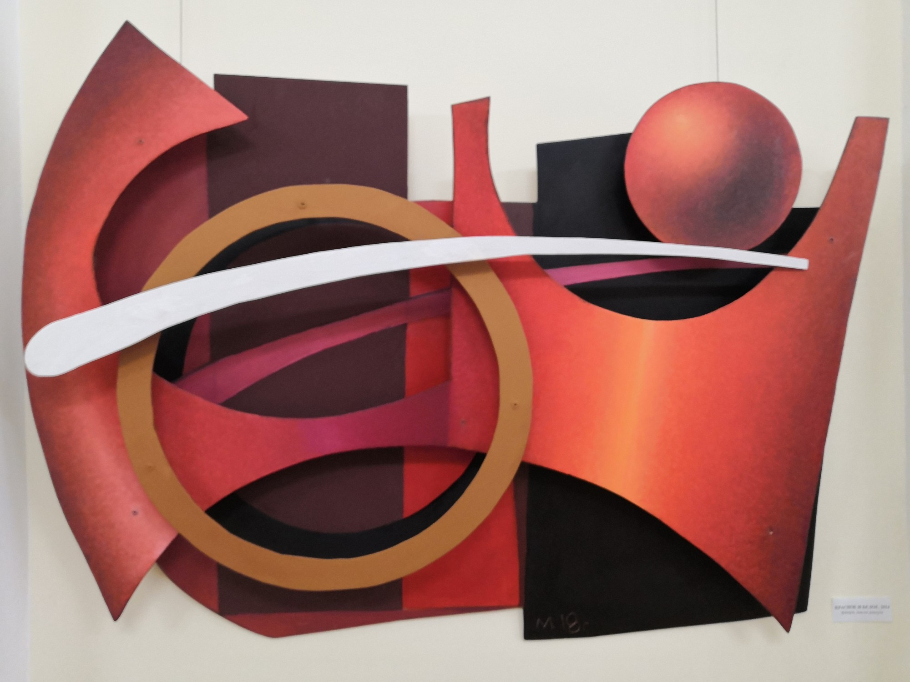

Что такое эстетика?
Зачем нужна эстетика?
Типы эстетики
Формальная эстетика– это линия, близкая к психофизиологии. Она применяет методики выбора предпочитаемых элементарных форм и цветовых пятен, а также тесты для проверки художественных способностей.